从指令到可编辑 3D
本机建模、材质与相机调整、Cycles 渲染、另存工程、导出 GLB，以及网页实时查看和沿道路漫游均已跑通。结果是有几何的场景，能换角度查看。
从 DeepSeek 展示帖出发，我们用 Codex 驱动本机 Blender，经历单图场景、视觉对齐、材质试验、猫的走跑，以及两岸街区的补全。这一页保留成果，也保留没有达到的目标。
本轮只整理研究，不继续修改场景。已有模型、网页与实验版本保留；未提交、未发布。
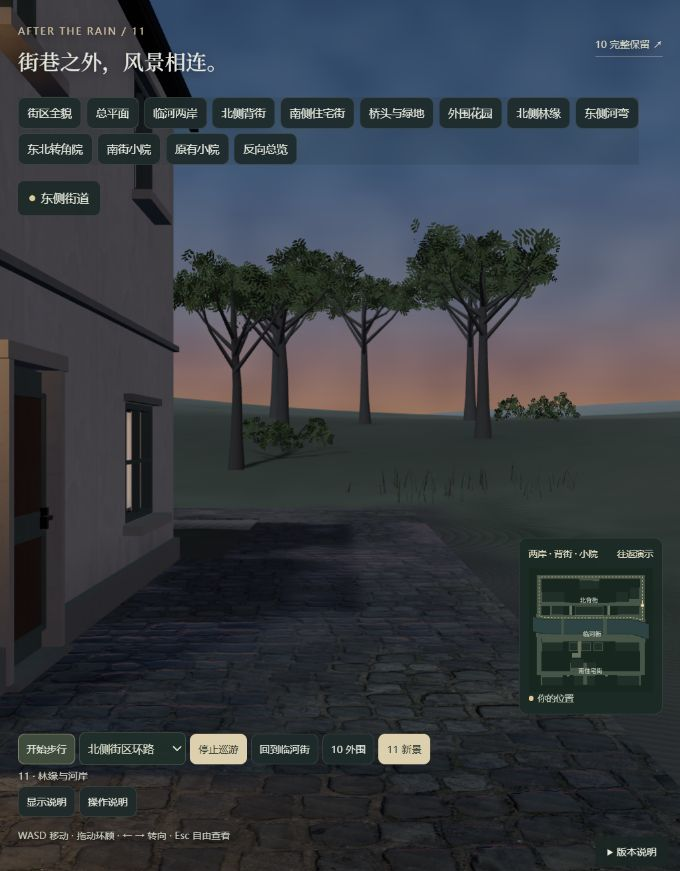
最有价值的发现是：AI 与 Blender 的连接和命令执行容易验证，持续稳定地得到好场景更依赖资产、约束、空间设计和审美验收。后期继续逐项微调，新增研究信息已经有限。
本机建模、材质与相机调整、Cycles 渲染、另存工程、导出 GLB，以及网页实时查看和沿道路漫游均已跑通。结果是有几何的场景，能换角度查看。
参考图的建筑比例、生活细节、雨后质感和光线组织未完整复现。街区重复、地景组织与角色动作虽多次修正，整体仍有原型感。
本实验没有安装和直接运行 DSH 或 MCP，也没有做同图、同预算、同资产的 DeepSeek / Codex 对比。不能据此排名，更不能把本次效果视作某个库的能力上限。
受源展示启发，独立验证“AI 编写与迭代 Blender 场景”的可行性，并探索它转成可漫游网页的成本。我们验证了这条工作流，未完成源帖复现，也未完成照片级老街。
Chimney 的原 X 帖 · 2026-10-19 ↗。本轮通过 X 官方 oEmbed 与 syndication 响应找回这条帖的四张静态附图，下面展示原图内容。普通网页抓取曾返回 403；这不再意味着没有原始媒体。
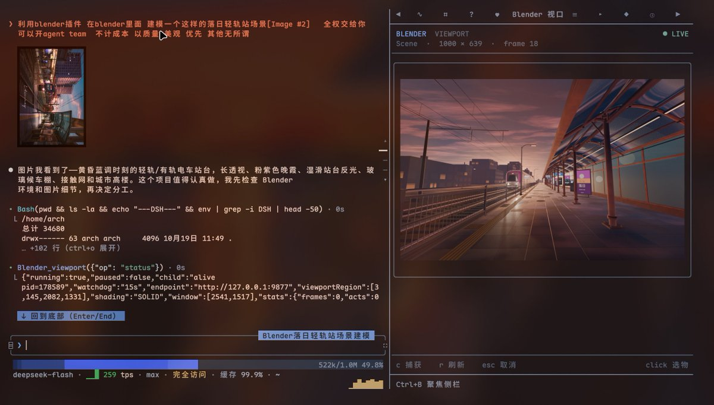
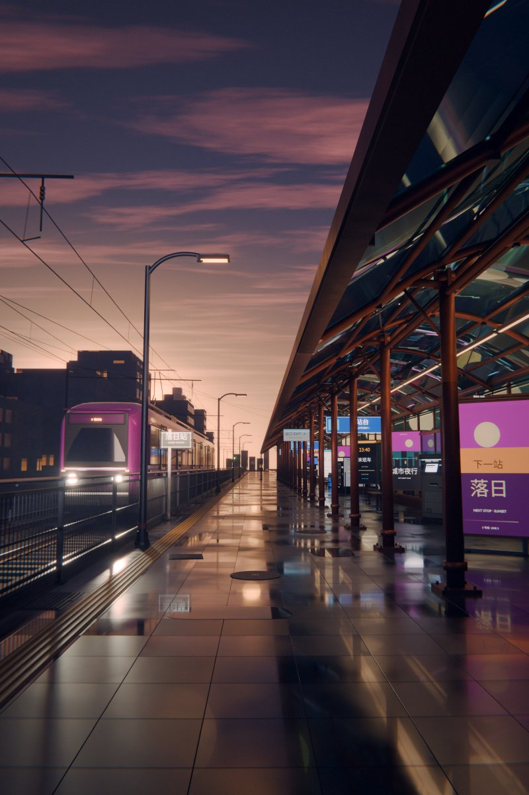
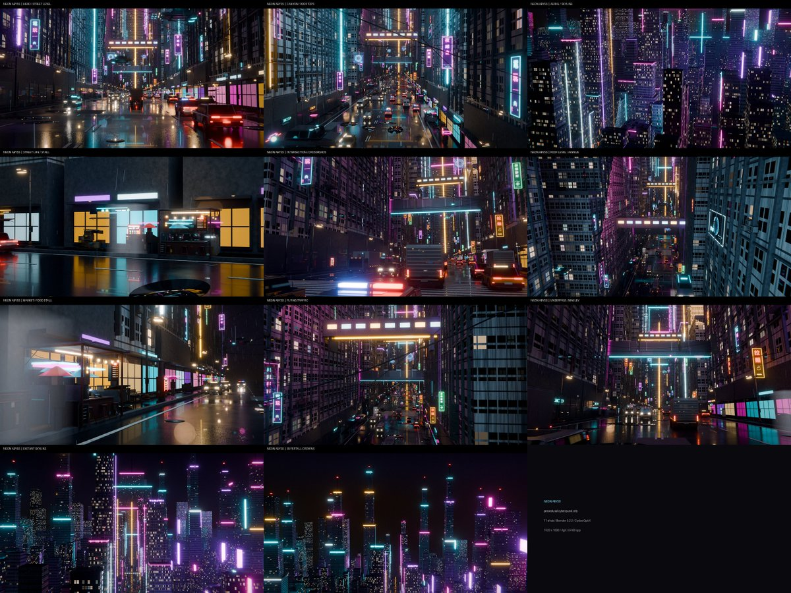
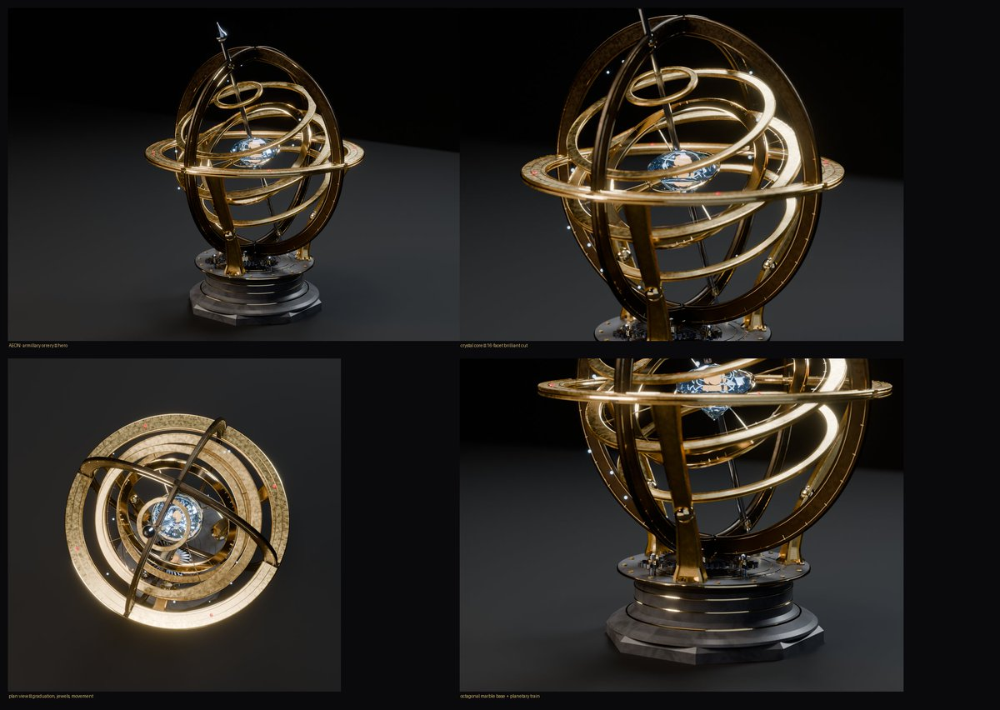
作者描述使用 dshTUI + dsh-blender-plugin + ds1017 建模与渲染，自报投入为 1.58eToken / 1h20min / 12rmb。保留原写法，不擅自换算 token 单位。这些数值未独立复核；四图不等于四次完整可复现测试。我们没有取得该任务完整工程和全过程日志。
图像版权归原权利人；插件代码许可证不自动覆盖 X 图片。本轮仅在本地研究页带出处展示，未发布。原媒体来源、尺寸与 SHA-256 清单 ↗ · dsh-TUI · dsh-blender-plugin
讨论过更复杂的场景后，我们另行生成了中等复杂度的“雨后临水老街”，用来控制范围：连续店面、石桥、河面、湿铺地、暖窗与暮色。没有把源站站台图直接作为本次建模输入。


归档缺口：早前讨论的不同复杂度生成图，未找到可确认的独立项目文件；本页展示已归档的正式采用版本，不补造“历史原图”。
最初没有先建立严格的参考图验收约束，这是前几版差异大的主要原因之一。后续确实在迭代，但不能把早期偏差全部解释为有计划的分阶段推进。
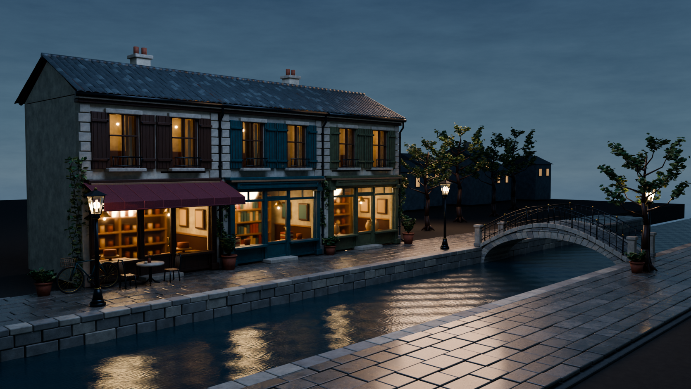
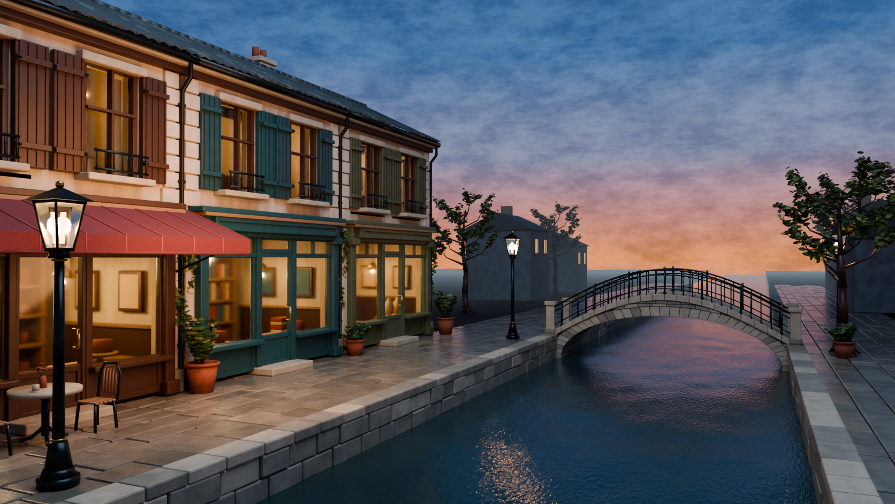
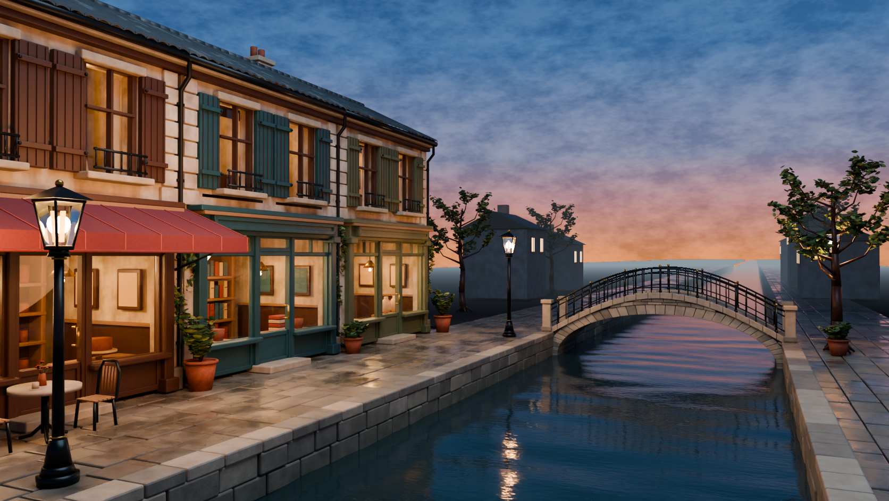
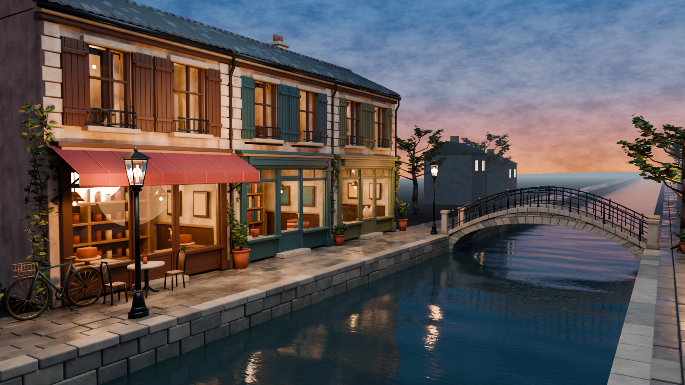
12 个人工建筑锚点：投影 RMS 从 204.51 → 36.92 px；4 个河岸点对线：RMS 从 67.61 → 12.74 px，按 1672 × 942 坐标计算。两组指标不混算；它们既不是整图相似度，也不是独立留出测试，更不证明写实质量达标。
按用户要求先标注参考图与 V4 的差异，再做两张 1104 × 622、40 samples 小样。调整原有窗组、线脚、屋顶高低，未新增对象和基础拓扑。第二张是待评候选，没有最终接受或生成正式高清 V5。
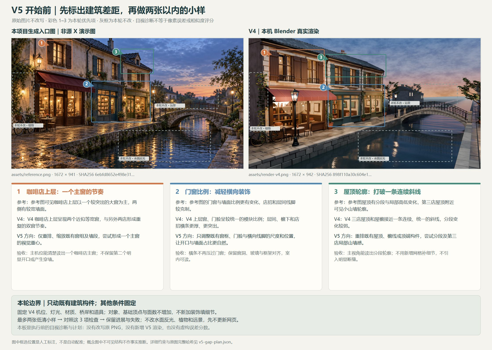
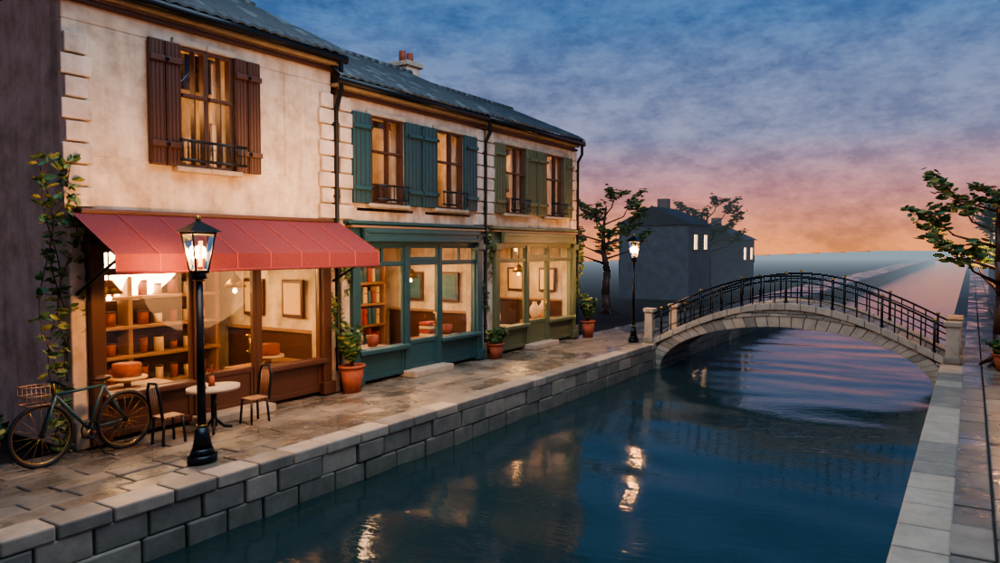
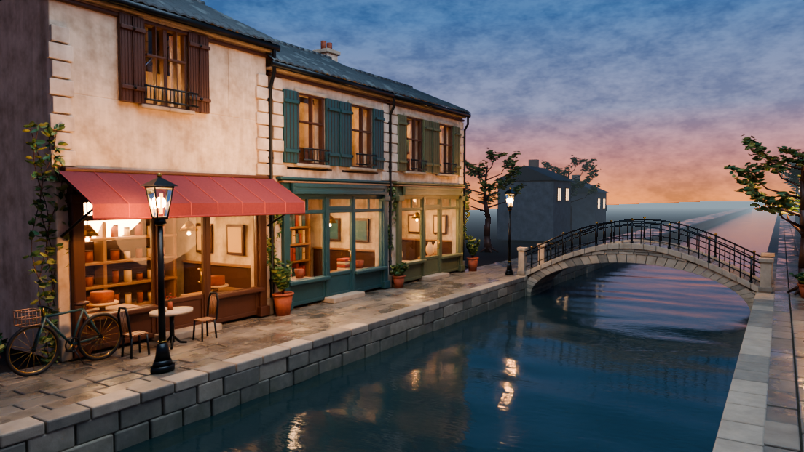
第二轮同样最多两张低清。几何、相机、灯光、世界环境冻结，只改已有湿面与水材质参数。暖倒影更长、更破碎，路面改善较轻；反射源和灯位固定后，单改粗糙度与波纹有明显上限。
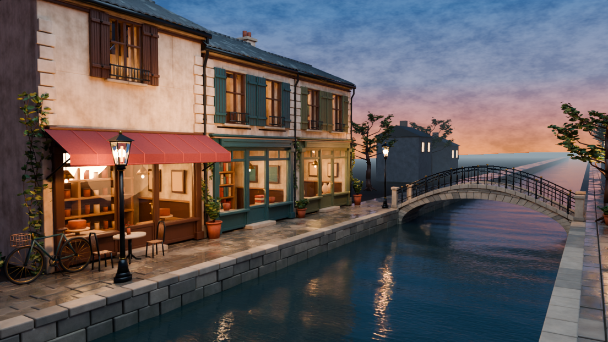
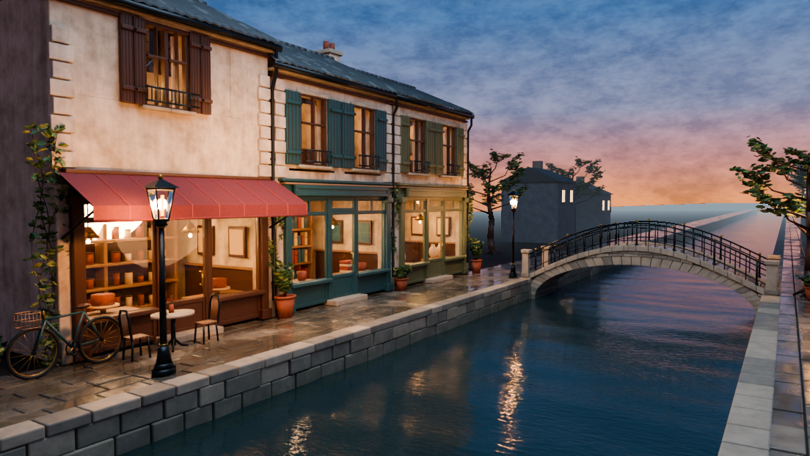
V5 与湿面两轮分别遵守两张小样上限，不能合写成一个“已完成的 V5 正式版”。本轮整理把候选接入研究档案，不追认当时视觉验收成功。
需求随着实际查看而变化：先要求接近参考图，随后转向完整空间、可漫游角色和整片街区。每次增加的目标都带来新的验收维度，不能用最后的鸟瞰图反推最初已完成全场景。
真实几何、材质、渲染和网页逐步接通；主要追求类似雨后暮色。用户持续指出与参考差异，促使研究回到构图和准确性。
转折：先定义“像什么”，再评估是否更接近。
人工选点、相机与布局校准；随后立面和湿面各两张低清，限制复杂度，保留失败与未完成项。
发现：指标改善只能覆盖指标实际测量的部分。
新增对岸房屋、后立面、后巷和回程桥；补地面承托、远景断边与漏空；再增加曲岸和低丘。结构更完整，但原有直路和直墙仍主导视觉。
代价：单图之外的空间必须重新设计，无法从图中直接恢复。
Cycles 节点、灯光和光传输不能无损变成 glTF。早期网页更差，随后加入材质烘焙、环境照明与反射近似，改进观看；没有重新获得离线渲染质量。
发现：建模、离线渲染、实时呈现是三个不同问题。
尝试跟随主体、店面、街道、比例和镜头。猫形象与姿态持续暴露问题，工作从简单程序形体转为静态资产自绑，再转为原生动画资产适配。
发现：角色形体、绑定、步态、起停和镜头不能靠同一组参数一起解决。
补两岸和背街，修地形、立面与夜景，加入巷口小院、完整街区，再修庭院布局、重复房屋和外围边界。逐项变好，整体仍显程序化。
收束：连接能力已清楚，继续微调的边际收益降低。
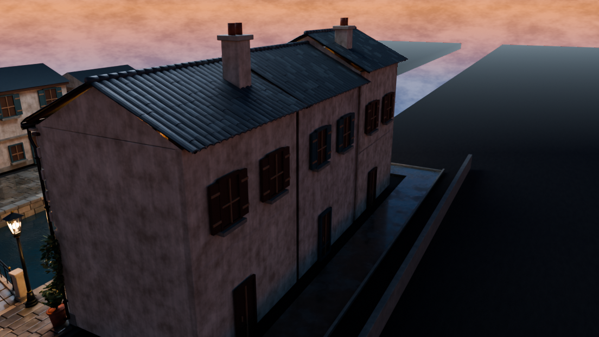
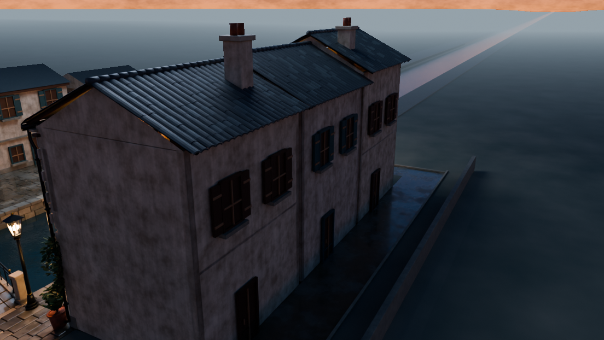
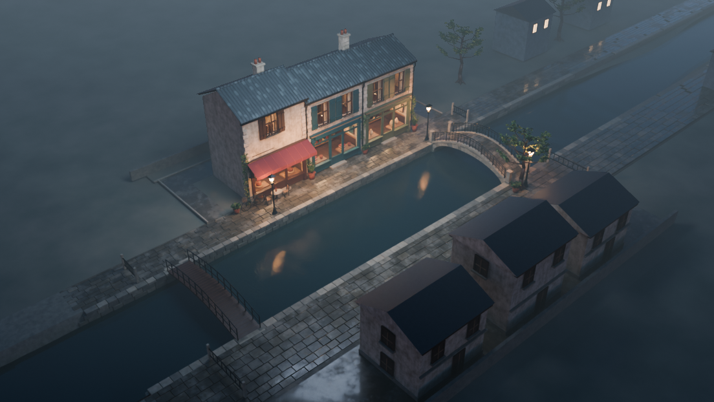
| 版本 | 主要工作 | 实际边界 |
|---|---|---|
| SPACE01 ↗ | 补齐两岸、后巷、桥头与远景的外部空间。 | 空间骨架先行；对岸、地形和材质偏简。 |
| SPACE02 ↗ | 修地形陡边与地面，统一对岸 / 后巷材质。 | 网页世界 UV 与 PBR 属运行层，Blender 工程不等于最终网页外观。 |
| SPACE03 ↗ | 改善对岸屋顶、窗框、门与墙面层次。 | 减少盒子感，整体密度和类型仍重复。 |
| SPACE04 ↗ | 协调窗内层次、书店与对岸的夜色细节。 | 复用 03 GLB，新增网页运行效果。 |
| SPACE05 ↗ | 巷口、小院、围墙与进出路线。 | 有限小院可走入走出；住宅内部未开放。 |
| SPACE06 ↗ | 扩大成两岸、背街、桥头和外围的完整街区布局。 | 范围扩展后暴露排列重复、院落和空旷边界。 |
| SPACE07 ↗ | 将窗光、入口光和街灯铺到整片街区。 | 复用 06 GLB；有光不等于空间组织合理。 |
| SPACE08 ↗ | 修不合理房屋 / 院落关系，重组 21 栋外围住宅批次及连续地面。 | 21 栋是该重建批次数量，原核心商店等另保留，不能称全景仅 21 栋。 |
| SPACE09 ↗ | 协调材质、水面与植被等实时观感。 | 复用 08 GLB；视觉改进不代表新增模型一版。 |
| SPACE10 ↗ | 变化房屋体量 / 层高、加入外围庭园与连接路线。 | 13 栋变化，其中 5 栋改单层；其余 8 栋该批次旧形体保留。仍有模块复用。 |
| SPACE11 ↗ | 在既有地形上连接林缘、草甸和河岸，缓解街区外一大片空地。 | 复用 10 GLB / 导航，运行层补景；当前冻结版本，未再继续精修。 |
当前保留 SPACE11。既有道路、两岸、回程桥、背街和部分小院能连接探索；私人院落、住宅室内和无限远景不在已完成范围内。下方可独立打开保留的原版 3D，本轮没有改动场景。
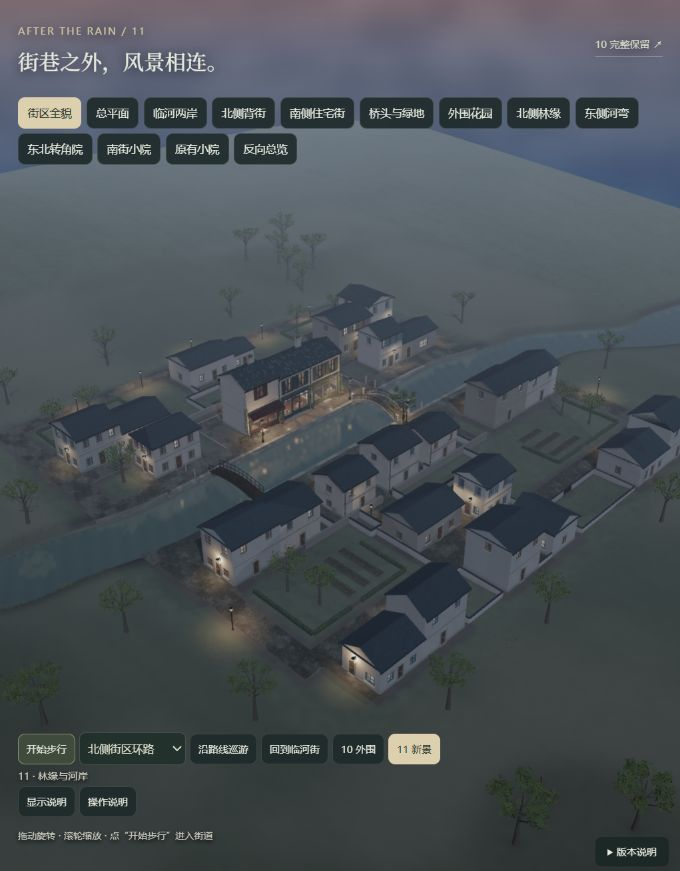
3D 在独立页打开，避免与这篇长图文档案同时运行。进入后可切观察角度、开始步行或沿路线巡游。画面为实时近似，不等同 Cycles。
打开最终 3D 小样 ↗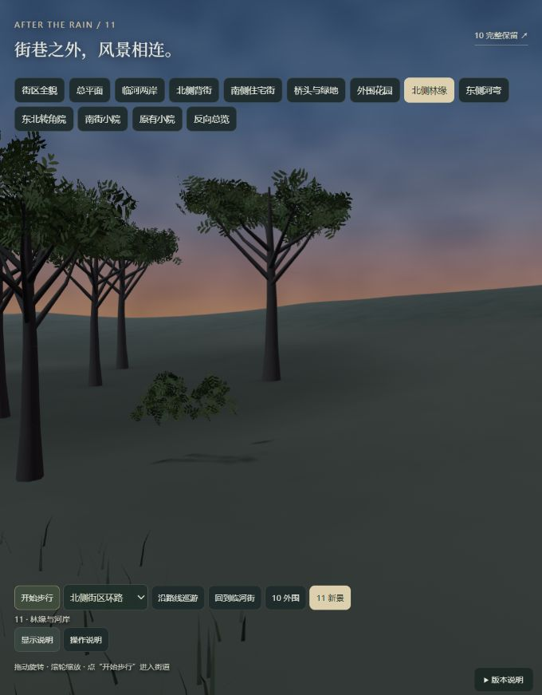
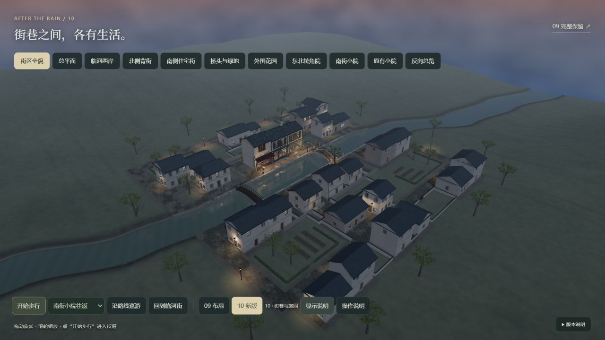
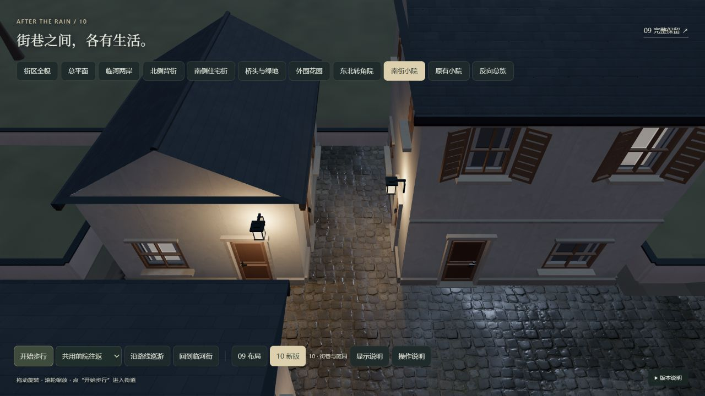
可核指标：10 的基础 GLB 为 252,502 三角形 / 16,325,100 bytes；11 新增运行层几何 51,949 三角形、3 个 draw calls。基础 GLB 包括被隐藏批次，不能直接相加当作可见总量。11 未加贴图、灯光或投影物。报告验证指定检查范围，不代表生产级无缺陷。
角色不是主线最初目标，但漫游需要一个主体，于是投入逐步转向形象、头颈、眼神、步态、走跑和镜头。多轮修正仍未获得满意的真实体感，最终切换成熟免费资产，再回到场景研究。
使用简形体组合，并尝试行走和跟随镜头。外形像狗、比例和步态不自然，形体基础不足；后续不应继续只靠摆动头尾来掩盖。
初版漫游 ↗ · 10 米街段试样 ↗采用 Grab3D 的 CC0 静态猫资产，发布者披露其 Meshy 基础与 Blender 清理来源；我们做减面、绑定、程序步态、转头低头眨眼、走跑和全身联动。不能把静态外形算作本次从零生成。
原始资产查看 ↗ · V12 动态小样 ↗免费候选中先选 A：JonasDichelle 的 BlendSwap 模型与原生走跑，CC BY 3.0。经登录下载、兼容烘焙、材质适配，独立观察后接入街区，继续调起停转身。
A 独立走跑 ↗ · A 街区接入后迭代 ↗依次处理头部固定偏转、头颈过渡、眼睑位置、脚掌落地、关节变形、步态、走跑切换、头尾滞后、肩背与呼吸，以及起停转向。动作“会动”与形体“像真猫”需要分别验收。程序补动不能替代合适的骨架、权重、解剖结构和动作资产；成熟动画也不自动保证网页中的转弯、落脚与跟拍自然。
V12 当时实际录屏，保留问题。与成熟 A 模型不是同一资产。静帧无法证明步态自然，建议正常速度动态观察。
A 没有已归档的本地展示录屏，因此直接提供动态页面，不拿 V12 视频代替 A。A 原资产与作者 · CC BY 3.0
嘴部动画按当时用户要求延后，未作为本次完成项。猫与成熟动画支线没有改变源库是否可控的核心结论，后期继续投入的研究回报已降低。
语言模型先理解目标与截图，再通过工具修改场景，读取结果继续调整。DeepSeek 本身不自带 Blender 会话；连接层负责把工具请求落到 Blender，最终几何与渲染由 Blender 执行。
文本 / 图片 → 约束、相机、对象与验收目标。
模型编写脚本或调用工具，由宿主和连接层执行。
bpy 修改几何、材质、灯光；保存工程与输出图像。
读取视口 / 渲染、指标与报错，选择继续、回滚或停止。
| 路径 | 模型 / 宿主到 Blender | 主要区别 | 本次证据级别 |
|---|---|---|---|
| 源帖 DSH | DeepSeek → dshTUI / DSH → dsh-blender-plugin → Blender 桥接。 | 围绕 DSH 会话组织检查、执行、视口反馈与验收；当前文档也描述持久会话和无界面回退。 | 原帖媒体 + 官方仓库文档。没有本地运行该库。源码 ↗ |
| MCP for Blender | 支持 MCP 的 AI 客户端 → MCP 服务 → Blender addon。 | 用通用协议暴露对象编辑、Python 与视觉反馈；具体宿主、工具组织及可选外部资产 / 生成服务不同。 | 官方仓库阅读，没有本地安装或对照实测。源码 ↗ |
| 本次 Codex | Codex → 本地 Python 脚本 / Blender 命令行 → bpy → Cycles / 导出 GLB → Three.js。 | 直接写脚本、看真实结果和报告后迭代；后期网页另有材质、照明、导航与角色控制层。 | 已实测，有工程、渲染、网页与审计。未使用 DSH / MCP 插件。Blender Python API ↗ |
底层都可能执行 Blender Python，但宿主、协议、会话持续性、状态检查、视觉反馈和验收流程会影响可靠性。换模型和换连接库是两个变量；能调用同样的接口，不代表能以同样成本得到同样质量。
本次是看图后重新组织几何与材质的脚本建场景，不是自动从单图恢复真实扫描，也没有调用外部图生 3D 网络。被遮挡表面、背街、河弯和院落大多是后续设计。最终网页又增加了独立运行层，所以单个 GLB 或 Blender 工程不能单独完整复现最终网页外观。
资料核对至 2026-10-25，仓库功能可能继续变化。DSH、MCP 的外部资产 / 生成集成不能当作本次已测能力。源项目 BSD-3-Clause、MCP 项目 MIT，许可范围以各仓库为准；媒体与第三方资产另有归属。
| 能力 / 目标 | 此次观察 | 结论边界 |
|---|---|---|
| 建模与编辑控制 | 保存、重开、修改、渲染、导出均有实际产物。 | 证明执行链与有限任务可用，不代表任何提示都能一次成功。 |
| 参考图对齐 | V4 选点误差下降，V5 局部窗组再调整。 | 只测人工选定要素；整体材质与结构未复原。 |
| 真实 3D 空间 | 换角度、沿路行走、进出部分小院。 | 有限户外范围；未恢复参考图中不存在的信息，也未补全所有室内。 |
| 实时渲染迁移 | 通过烘焙、PBR、环境与反射近似改善网页。 | Cycles 节点、间接光、反射与阴影不能直接无损转 glTF；网页仍有画质差距。 |
| 角色与动画 | 程序姿态、静态猫自绑、成熟动画适配三条路线均有尝试。 | 后两条借用外部资产；形象和自然感未达用户期待，未认证通用角色生成。 |
| 可回退与验证 | 旧工程和网页保留，多轮有哈希与约束审计。 | 数据保留不等于新增物体开启后旧画面像素相同；报告 PASS 不等于好看或无缺陷。 |
| DeepSeek vs Codex | 源展示与本次独立路线同时留档。 | 没有同输入 / 同预算 / 同资产基准，不能比较质量、速度或费用胜负。 |
| 自动化产品 / 生产资产 | 本地研究原型可看可走。 | 多设备性能、完整碰撞、动画质量、拓扑、交互和长期维护没有系统生产验收。 |
单图没有完整空间约束；早期布局和立面偏模板；重复资产缺少有逻辑的变化；灯光、材质与场景构成耦合；实时渲染有近似。分散修局部难以代替整体设计，而角色问题还涉及专门的解剖和动画知识。
同一小型资产在 DSH / MCP / 直接脚本之间的操作可靠性；同输入同预算的图像对齐；已知 3D 的隐藏视角还原；现成高质量资产与从零脚本建模的质量成本差异。它们是未来独立题目，本轮不再开新实验。
已记录的秒数主要是机器执行时间。需求澄清、查资料、写脚本、看结果、失败回退、绑定与适配、网页检查都不在同一个计时器里。没有可靠总工时和总费用账本，不能编出一个项目总价。
| 记录 | 确实能读出的投入 | 不包含 / 不能推出 |
|---|---|---|
| 源作者自报 | 1.58eToken / 1h20min / 12rmb，原帖原写法。 | 没有独立重放或账单，不能与我们的脚本秒数直接比较。 |
| V1 | 一次记录：建场景 49.24 s，渲染 9.88 s，共 59.22 s。 | 不含构思、代码、检查与此前试样，不是“一分钟完成研究”。 |
| V2 | 加载既有场景、修改与保存等 1.31 s，渲染 10.19 s，共 11.51 s。 | 复用 V1，不是从零重建的完整时间。 |
| V5 / 湿面 | 各两张 1104 × 622 小样。V5 渲染 5.701 / 5.443 s；湿面 7.358 / 6.584 s。 | 不含标注、诊断和审阅；两轮均没有被最终接受为高保真结果。 |
| 基础复杂度约束 | V1–V5 基础对象数 2,109、网格顶点 159,646；部分阶段保持数量。 | 数量不变仍可改变坐标、材质等；修改器 / 曲线求值和渲染成本不保证相同。不能延用到扩景后的街区。 |
| 额外资产 | 使用免费 CC0 环境 / 材质与猫静态资产；A 猫 CC BY 3.0，需要保留署名。 | 免费资产仍需要下载、检查、兼容与适配时间；不等于本次整体零成本。 |
| 研究总投入 | 有分轮产物、脚本、检查与部分机器计时。 | 总人工 / 代理工时、token、订阅摊销、能源、完整失败尝试均未统一计量，因此总额标记未知。 |
计时环境：Blender 4.5.9 LTS / Cycles，记录设备 NVIDIA GeForce RTX 4070 Laptop GPU。上述仅为当时记录条件，不是跨硬件性能承诺。V1–V4 原始统计与计时口径。
理解连接原理、跑通本机控制、拿到可编辑资产与真实渲染，较快回答“能不能操作”。V4 的对齐暴露了目标和验收的重要性。
快速搭空间草模、批量摆放、参数化修改、预览与导出，适合有明确规则和低成本验收的任务。成熟资产基础上组场景通常更有希望。
逐个修猫头尾、每次补一点地景或灯光，后期虽有改善，却未扭转整体风格。以目前目标继续投入，质量回报不确定，因此收束。
保留下来的不是“照片变世界已经解决”，而是一套可复用的工作流与判断标准：先定输入、范围和验收；区分模型、资产、连接层与渲染器；记录真实结果和失败；把高质量资产与人工审美当作独立投入。对库的机制与此类流程的局限已经有足够理解，本轮在这里停止。
共 47 个归档条目，覆盖 45 个既有网页入口、16 个 GLB 文件及已归档渲染 / 截图。阶段可共享一个页面，页面也可能包含多种对照。不同数量分别表示不同东西，不相加为“实验次数”。
SPACE04 / 07 / 09 / 11 复用前版 GLB；没有单独新导出不是遗漏。GLB 只含导出内容，最终网页运行效果仍依赖对应脚本。可编辑 .blend 保留在本地 artifacts，没有复制到网页冒充可下载。
下载完整媒体 / 页面 / 模型索引 JSON · 38 个连续节点的过程证据审计。部分诊断图只在本地资产库保留，代表图已另行打包；所有展示图保留原字节，未 AI 重绘或拉伸掩盖问题。
“原帖发布 / 作者自述”“仓库文档”“本机实测”“未测试推断”分开陈述。旧 V4 主页与旧引导图按原件保留，里面的“最新”和“尚未核实源媒体”只代表当时状态；当前进展以本页和新证据为准。
公开研究副本去除本机绝对路径，并对超长采样数组做摘要。目录同时记录原始文件 SHA 与公开副本 SHA；它们可能不同。原始本地证据不改动。
SPACE04：runtime-validation-final；09：runtime-validation-accepted；10：scene-validation-final + runtime-validation-final；11：runtime-validation-final-r2 + shadow-validation-final + web-validation。中间失败或未通过视觉审阅的记录仍在本地，不能抹去后只统计 PASS。
收录实验结论、渲染预算、来源许可、构建 / 导航 / 网页最终报告与研究文档。可按标题或原文件名查找。这里是研究资料副本，非新的场景产物。
证据目录 JSON / 原件与公开副本校验 · 完整原文件索引。旧工程与网页继续保留；本轮没有新增建模、渲染、安装或发布。